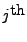
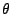
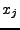
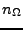
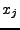
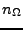

Next: Comparison of the Models
Up: Appendix: Individual Level Models
Previous: SPK Model for an
Contents
NONMEM's model
4
for the  value of an individual's data is
where
 and  are a vector and diagonal matrix of
the individual's parameters,
 is a vector of known quantities for the individual
such as times and covariates,
and  is the number of elements along the diagonal
of .
NONMEM does not support the MAP Bayesian objective function
at the individual level.
are a vector and diagonal matrix of
the individual's parameters,
 is a vector of known quantities for the individual
such as times and covariates,
and  is the number of elements along the diagonal
of .
NONMEM does not support the MAP Bayesian objective function
at the individual level.
The output of NONMEM's individual level estimation is
which are estimates for the optimal values for the individual's
parameters.
Mitch Watrous
2007-12-17